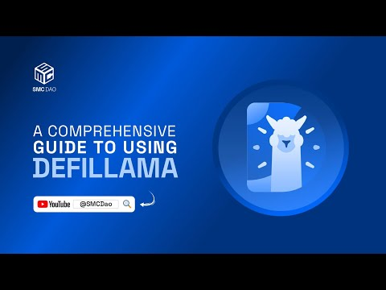

Defi Llama and the Great Liquidity Scatter: Can We Find Our Keys?
Remember that feeling when you’re frantically searching for your car keys? You know they’re somewhere in the house, but the house is a chaotic mess of forgotten projects and half-eaten snacks. That, my friends, is kind of how I feel about liquidity in DeFi. It’s out there, all this potential value sloshing around, but finding it, accessing it… that’s the real challenge. And that's where Swap Llama steps in, or at least tries to.
The decentralized finance (DeFi) space is booming, a vibrant ecosystem promising financial freedom and innovation. But this boom has a shadow: liquidity fragmentation. Think of it like having all your money spread across dozens of different, obscure banks, each with its own complicated fees and quirks. It's a nightmare for anyone trying to, you know, actually use their money.
DefiLlama, for those unfamiliar, is essentially a comprehensive data aggregator for the DeFi world. It acts like a giant, constantly updated spreadsheet, tracking everything from total value locked (TVL) across various protocols to the interest rates offered on different lending platforms. It’s a crucial tool for anyone navigating the increasingly complex landscape of DeFi. But can it truly tackle the problem of fragmented liquidity?
That’s the million-dollar question, isn't it? On one hand, DefiLlama provides invaluable transparency. It gives users a clear picture of where the liquidity is, allowing them to make informed decisions about where to invest or borrow. This increased transparency should theoretically lead to better liquidity allocation and, ideally, a more efficient market. Right?
However, the sheer scale of the problem is daunting. New protocols are constantly popping up, each adding to the complexity. It’s like trying to mop up a spill with a thimble. DefiLlama provides the map, but navigating the actual terrain remains a challenge. It's not a magic bullet; it's more like a highly detailed map in a vast, unexplored jungle.
And then there's the human element. Even with the best data, individual users still need to understand the risks involved in different protocols. DefiLlama presents the information, but it doesn't magically remove the inherent risks in decentralized finance. It's a bit like having a Michelin guide for restaurants – it helps you choose, but it doesn't guarantee a good meal. You still need to do your homework.
So, is DefiLlama the answer to liquidity fragmentation? Not entirely. It's a powerful tool, undeniably helpful, but it's not a silver bullet. It's part of a bigger puzzle, a piece that contributes to greater transparency and accessibility in a field that desperately needs both. Maybe the key to solving the fragmentation problem isn't just better data aggregation, but also a deeper understanding of user behavior and the development of more intuitive, user-friendly interfaces.
Ultimately, writing this article has felt like trying to unpack that same chaotic house I mentioned earlier. There's a sense of overwhelming complexity, but also an underlying hope. The quest for a more streamlined, efficient DeFi ecosystem is a work in progress, and DefiLlama is playing its part. And while I'm still hunting for those car keys (metaphorically speaking, of course), I feel a little less lost knowing DefiLlama is out there, helping light the way.
Lost in DeFi's Fractured Galaxy: How Swapr and DefiLlama Are Trying to Fix Things
Okay, confession time. I'm not a hardcore DeFi wizard. I'm more of a "enthusiastic beginner who sometimes accidentally sends ETH to the wrong address" type. So when I started digging into the world of decentralized finance, I felt like Han Solo navigating the asteroid field – exhilarating, but also terrifyingly easy to get lost. One of the biggest headaches? Liquidity silos.
Think of it like this: imagine a world with only tiny, isolated villages. Each village has its own currency, its own trading post, and absolutely no way to easily exchange goods or money with the others. That's kind of what DeFi felt like for a while. You’ve got Uniswap, SushiSwap, PancakeSwap – all these incredible platforms, but they're mostly separate ecosystems. Want to move your tokens from one to another? Brace yourself for a potentially costly and confusing journey.
That's where the frustration really set in. Why should we, the users, have to jump through hoops just to move our hard-earned crypto? It's inefficient, it's costly, and frankly, it's a little bit ridiculous. It feels like the Wild West out there, which, in a way, it still is.
Enter Swapr and DefiLlama. These projects, while different, are tackling this problem from slightly different angles, and that, to me, is fascinating. DefiLlama, with its incredible aggregate data dashboard, gives you this panoramic view of the DeFi universe. It’s like suddenly having a star chart to navigate by, rather than stumbling around blind. You can see the size of different platforms, what tokens are being traded, and get a sense of the overall market. It doesn’t solve the silo problem itself, but it shines a much-needed light on it.
Swapr, on the other hand, is trying to build bridges. Think of it as building roads between those isolated villages. Their aim is to make swapping between different DeFi platforms seamless and affordable. It’s ambitious, incredibly ambitious, and I’m still a little skeptical. Will it really work? Can they overcome the technical challenges and convince all the different platforms to play ball? I honestly don’t know.
The thing that struck me most, though, is that these projects aren't just competing. There's a certain synergy. DefiLlama's data is invaluable in understanding the landscape that Swapr is trying to navigate. They're tackling different aspects of the same problem, and ideally, their efforts will complement each other.
This whole journey has made me realize something: DeFi is still in its early stages. It's messy, it's chaotic, and it's full of challenges. But it's also incredibly exciting. We're witnessing the creation of a truly decentralized financial system, and while the path might be rocky, the potential rewards are enormous. Projects like Swapr and DefiLlama represent the kind of innovation and collaboration we need to make DeFi truly user-friendly and accessible.
So, where does that leave me? Well, I’m still cautiously optimistic. My initial frustration with liquidity silos hasn't completely vanished, but I'm feeling a little less like Han Solo battling asteroids and a little more like a seasoned explorer charting new territory. The journey continues, and hopefully, with projects like Swapr and DefiLlama lighting the way, the DeFi galaxy will become a lot less fragmented and a lot more user-friendly. Maybe someday, even I’ll be able to navigate it without accidentally sending my crypto to the digital void. One can dream, right?
Diving Deep: Finding the Best DeFi Pools with DefiLlama – A Slightly Panicked Journey
Remember that time I tried to bake a cake using only vague instructions from a cryptic online forum? Let's just say the result resembled a hockey puck more than a Victoria sponge. Finding the best DeFi liquidity pools feels a lot like that sometimes. So much information, so many variables, so much potential for… well, a hockey puck-shaped financial disaster.
That's where DefiLlama comes in. It’s not a magic wand (sadly), but it's a pretty powerful analytics dashboard that helps navigate the often-murky waters of decentralized finance. I’ve been using it lately, and honestly, it's changed my approach to yield farming from “frantic guessing game” to “slightly less frantic, more informed guessing game.” Progress, right?
The initial allure of DeFi is undeniably potent. Those juicy APRs (Annual Percentage Rates) practically sing a siren song, promising mountains of passive income. But let’s be real, not all pools are created equal. Some are shimmering gold mines, others…well, let's just say they resemble those aforementioned hockey pucks. And sifting through the sheer volume of options can feel like trying to find a needle in a haystack made of… well, more needles.
DefiLlama tackles this problem by aggregating data from various DeFi protocols. You can filter by chain (Ethereum, Polygon, Arbitrum – the list goes on!), type of pool (stablecoin pairs, single-asset staking, etc.), and even sort by TVL (Total Value Locked), a commonly used metric indicating pool size and liquidity. It's like having a comprehensive cheat sheet for the DeFi wild west.
Now, I’m not going to lie; I still feel a healthy dose of skepticism when I look at some of these incredibly high APRs. Is it too good to be true? Probably. Is that little voice in my head reminding me of all the times I’ve fallen for too-good-to-be-true things, screaming at me to be cautious? Absolutely. DefiLlama helps manage that fear – by letting me delve into the specifics of each pool, helping me understand the risks involved, and encouraging a more data-driven approach rather than simply chasing the highest number.
One thing I've learned: TVL isn't everything. A massive TVL can suggest a safe, liquid pool, but it's crucial to look beyond that single number. DefiLlama provides tools to check the pool's impermanent loss, the fee structure, and the overall health of the underlying protocols. It’s like peeling back the layers of an onion… only hopefully less tear-inducing.
My journey with DefiLlama hasn't been a smooth, linear path to DeFi enlightenment. There have been moments of confusion, moments of near-panic when I questioned my understanding of concepts like "gas fees" and "slippage" (Google is my best friend, seriously), and moments of begrudging respect for the sheer complexity of this whole decentralized thing.
But what started as a frantic search for quick riches has transformed into a more thoughtful, patient approach. I’m still learning, still making mistakes (probably), but DefiLlama has given me the tools to approach the world of DeFi with a bit more knowledge and a whole lot less blind faith. It’s less about finding the "best" pool and more about finding pools that align with my risk tolerance and understanding. And that, my friends, is a victory worth celebrating – even if it's with a slightly less hockey-puck-shaped cake next time.
The Wild West of Swapping: My Accidental Journey into Cross-DEX Aggregation
Remember that scene in "Office Space" where the guy's stapler disappears? That's kind of how I felt when I first started navigating the DeFi world. Except instead of a stapler, it was my ETH, flitting between exchanges like a caffeinated hummingbird. I wanted to swap it for some shiny new meme coin, but finding the best price felt like searching for a needle in a digital haystack – a haystack populated by bots and slippage. That's when I stumbled upon cross-DEX aggregation powered by Swap Defi Llama routing, and let me tell you, my world changed.
At first, it seemed too good to be true. I mean, a single platform promising to find the absolute best rates across all decentralized exchanges? It sounded like the siren song of a rug pull, honestly. My inner skeptic, that little voice whispering doubts in my ear like a grumpy accountant, was screaming "danger!" But the allure of maximizing my returns, of outsmarting the algorithm (or at least, getting close), was too strong to resist.
So, I dove in. I'd heard whispers about Defi Llama's prowess in tracking DeFi protocols and their stats. They had the data; could they actually use it to create a superior swapping experience? The answer, after a few hesitant swaps, was a resounding yes, albeit with a few caveats.
The process itself is surprisingly intuitive. Instead of jumping between Uniswap, SushiSwap, Curve, and a dozen other platforms, each with its own fees and quirks, I could plug my swap into an aggregator that quietly worked its magic in the background. It's like having a personal DeFi concierge, except this one doesn't charge exorbitant fees (although, of course, gas fees are still a thing – the ever-present shadow of the Ethereum blockchain).
But here's where things get interesting. It's not always perfect. There are times when the aggregator might not find the absolute best price, or when the gas fees eat into your profits more than expected. It's a bit like using a price comparison website for flights; it usually helps, but you still need to do your due diligence. And sometimes, the "best" price might involve a slightly more complex routing path, which could introduce a microscopic risk – negligible for most, perhaps, but enough to make my cautious little accountant voice chirp up again.
This isn't a get-rich-quick scheme, folks. It's a tool, a powerful tool, but a tool nonetheless. The real magic lies in understanding how the aggregation works. Understanding the limitations, the potential pitfalls, and knowing when to trust the algorithm and when to proceed with caution. It’s about embracing the complexity of decentralized finance, instead of shying away from it.
So, where does my accidental journey leave me? Well, my initial skepticism hasn't entirely vanished. It’s more of a healthy wariness now, a reminder to remain informed and engaged. But my experience with cross-DEX aggregation powered by Swap Defi Llama routing has been overwhelmingly positive. It's streamlined my trading process significantly, allowing me to focus on the bigger picture – the exciting potential of DeFi itself, rather than getting bogged down in the technical minutiae. It’s no longer a chaotic, frustrating experience; it's become a smoother, slightly less stressful adventure. And that, my friends, is a significant improvement. Now, if you'll excuse me, I have some more meme coins to acquire. Wisely, of course. Probably.
My Brain Exploded (Slightly) Trying to Understand DeFi Llama's Multichain Magic
Okay, picture this: You're trying to plan the ultimate cross-country road trip. You've got a million different routes, gas prices fluctuating wildly, potential detours… it’s a logistical nightmare. That, my friends, is a tiny bit like understanding how DeFi Llama's multichain liquidity optimization engine works. Except instead of gas stations, it’s decentralized exchanges, and instead of a cross-country trip, it's optimizing billions of dollars worth of crypto across dozens of blockchains. Sounds…intense, right?
I'll admit, when I first started digging into this, my brain felt like one of those spinning pinwheels you see at carnivals – dizzying and slightly nauseating. It's not exactly the simplest thing to wrap your head around. But after several hours of staring blankly at charts and muttering about "impermanent loss," I think I've grasped the gist of it. And I'm here to share my slightly scrambled thoughts with you.
The core idea is pretty neat: DeFi Llama essentially acts like a super-smart, hyper-efficient travel agent for your cryptocurrency. It scans a massive landscape of decentralized exchanges (DEXs) across various blockchains – think Ethereum, Avalanche, Arbitrum, the list goes on and on – identifying the best places to park your liquidity to maximize your returns. It's constantly analyzing fees, trading volumes, and a whole host of other variables to find the sweet spot.
It’s almost like a financial arbitrage machine on steroids, only, hopefully, a legal one. (I’m still figuring out all the regulatory implications myself!) It’s certainly impressive from a technological standpoint. The sheer scale of the data processing required is mind-boggling. We're talking about a system that’s constantly juggling a massive number of factors in real-time, making incredibly complex calculations to optimize yields.
Now, here's where things get a little less clear for me. While I understand the what – optimizing liquidity across chains – the how is still a bit foggy. I keep picturing a bunch of highly caffeinated programmers hunched over keyboards, frantically adjusting algorithms. Probably not quite that dramatic, I imagine, but the underlying complexity is still awe-inspiring.
And there are always potential downsides. What about security risks associated with spreading your liquidity across so many different platforms? And is it truly that much better than simply sticking with a single, reputable DEX? These are questions I haven't fully answered yet, and frankly, that's okay. The point isn't to become an instant expert. It's about appreciating the ingenuity and scale of these innovative platforms.
So, where does that leave us? Well, my initial feeling of complete bewilderment has given way to a grudging respect, tinged with a healthy dose of cautious optimism. DeFi Llama's multichain optimization engine is undeniably complex, potentially groundbreaking, and definitely worthy of further exploration. It might not completely solve all our DeFi woes, but it's a fascinating glimpse into the future of decentralized finance – a future where algorithms navigate the chaotic world of crypto with an efficiency that would make even the most seasoned financial planner envious.
This whole process of trying to understand this technology has been a journey, hasn't it? I started with a sense of utter confusion, and ended up with a newfound appreciation for the intricate work being done in the DeFi space. Maybe, just maybe, I'll even try to understand a little more of it tomorrow. Or maybe I'll stick to simpler things, like figuring out how to pack for that cross-country road trip…one step at a time.
Decoding the DeFi Llama: My Quest to Untangle the Swap Universe
Okay, confession time. I’m not a crypto whiz. I mean, I get the basic concept – digital money, blockchain, the whole shebang. But navigating the world of decentralized finance (DeFi)? It feels like trying to assemble IKEA furniture while simultaneously fighting off a swarm of angry bees. Each platform throws a new set of jargon and interface quirks at you, leaving you wondering if you accidentally wandered onto a digital battlefield instead of a financial playground.
That's where DefiLlama comes in, at least in theory. It's supposed to be the aggregator, the one-stop shop for all your DeFi needs. In reality? Well, let’s just say my initial experience was less "aha!" and more "huh?".
I remember my first foray into DefiLlama's swap section. It felt like staring at a spreadsheet designed by a mischievous AI – a chaotic jumble of numbers, percentages, and acronyms that would make even a seasoned Excel warrior weep. Seriously, where do I even begin? Am I supposed to be impressed by the TVL (Total Value Locked)? Or is it the APR (Annual Percentage Rate) that matters most? And what, pray tell, is a "slippage"? Is it the digital equivalent of a banana peel, causing my hard-earned crypto to slip away?
(Okay, maybe I'm exaggerating slightly, but you get the picture.)
The initial confusion stemmed from a few key issues. First, the sheer volume of information presented at once was overwhelming. It’s like being at a buffet with thousands of dishes, each labeled in a different, indecipherable language. You're paralyzed by choice, ending up grabbing a lukewarm cup of coffee and leaving hungry.
Second, the visual hierarchy – or lack thereof – needed some serious TLC. Important data points felt buried under a mountain of less critical details. It’s the digital equivalent of hiding the price tag at the bottom of a clothes rack, forcing you to sift through piles of sweaters just to find out if you can afford that cute cardigan.
BUT… and this is a big but, I've found that with a little patience (and a healthy dose of trial and error), DefiLlama’s swap section is starting to make more sense. I've discovered hidden gems – clever design choices that actually help navigate the complexity. For example, the ability to filter swaps by chain, by the token you want to exchange, or by the pool's liquidity is a game-changer. It's like suddenly having a map in the middle of that previously confusing battlefield.
I still have moments where I stare blankly at the screen, muttering about "impermanent loss" and questioning my life choices. But those moments are fewer and farther between now. I’m learning to appreciate the power of this tool – the ability to compare different swaps side-by-side, to understand the fees involved, and to make more informed decisions.
My journey with DefiLlama's swap section isn't over; it's an ongoing process of discovery. But I've learned a valuable lesson: sometimes, a little bit of confusion is part of the learning curve. It's about embracing the messy middle, questioning the assumptions, and slowly piecing together the puzzle. And, perhaps most importantly, it's about finding the joy in untangling the complexities, one swap at a time. So, yeah, DeFi still feels a little bit like navigating a jungle. But hey, at least I have my machete (aka DefiLlama) now. Hopefully, this will be helpful to someone else too!
Lost in the DeFi Jungle: My Accidental Friendship with DefiLlama's Swap Interface
Remember that time I tried to make banana bread and ended up with a brick? Yeah, that's kind of how my first foray into interacting with liquidity protocols felt. Except instead of a dense, inedible loaf, I was left with a head full of confusing smart contracts and a wallet slightly lighter than before. The good news? I discovered DefiLlama's swap interface in the process, and it's been a lifesaver (or, at least, a very helpful baker's assistant).
I'm not a DeFi wizard. I'm just someone who got curious about these decentralized exchanges (DEXs) promising seamless swaps and lucrative yields – promises that sounded suspiciously like those ads for miracle weight-loss shakes. Initially, I navigated the world of Uniswap, Curve, and Balancer feeling like I was wandering through a jungle with a map drawn by a caffeinated chimpanzee. Each interface was unique, each gas fee a tiny stab to my soul, and the whole experience was frankly, overwhelming.
That's where DefiLlama stepped in, almost like a friendly guide offering a machete and a pith helmet. I know, I know, "DefiLlama's swap interface" doesn't exactly roll off the tongue like a Beyoncé lyric. But bear with me. What it offers is a unified, comparatively simpler way to interact with multiple DEXs without having to learn the idiosyncrasies of each one. It's like having a single app to order from different restaurants, instead of downloading dozens of individual apps.
Now, it's not perfect, obviously. Sometimes the gas fees still feel like they're trying to bankrupt me, and the interface isn't always as intuitive as I'd like (I mean, we're still talking about DeFi here, it's not exactly known for its user-friendliness). There are moments when I’m staring at the screen, muttering things about impermanent loss and slippage, wondering if I've accidentally sent my life savings to a black hole. (Spoiler alert: I haven't...yet).
But the convenience is undeniable. The ability to compare prices across different DEXs in one place is invaluable. It's like having a price-comparison website, but for cryptocurrency. And that, my friends, is a game changer. It saves time, which – let's be honest – in the fast-paced world of DeFi, is as valuable as, well, cryptocurrency. It also reduces the risk of accidental mishaps caused by navigating complex interfaces in a stressed or rushed manner.
I've come a long way from my initial banana-bread-baking-level DeFi experience. I still don't consider myself an expert, and I'm sure there are more sophisticated tools out there, but for someone who needs a user-friendly entry point into the world of interacting with liquidity protocols, Swap Llama 's swap feature has been a truly invaluable tool.
This journey, this article, isn't about a definitive guide to mastering DeFi – if I could write that, I'd probably be sipping margaritas on a beach somewhere, not tapping away at my keyboard. It’s about sharing a small victory, a moment of “aha!” in a world that often feels complicated and intimidating. It’s about acknowledging the learning process, the occasional frustrations, and the unexpected joy of finding a tool that makes this complex space just a little bit more accessible. And, hopefully, it saves someone else from baking their own DeFi brick.
My Accidental DeFi Llama Discovery: How I (Almost) Made a Killing (and Learned a Thing or Two)
Okay, let's be honest. The world of DeFi feels like a wild west saloon sometimes. One minute you're eyeing a promising liquidity pool, the next you're staring blankly at a chart that looks suspiciously like a seismograph recording an earthquake on Mars. I know this feeling all too well. Remember that time I tried to "moon" with that meme coin? Yeah, let's not talk about that.
But recently, something shifted. I stumbled upon DefiLlama, almost by accident, while nursing a lukewarm coffee and lamenting my poor LP choices. (We all have those, right?) It was like discovering a hidden map to buried treasure – albeit treasure buried in a digital minefield. And that treasure? Potentially enhanced value for my existing liquidity provider (LP) positions.
DefiLlama, for the uninitiated, is basically a comprehensive tracker for all things DeFi. Think of it as the ultimate cheat sheet for decentralized finance – showing you TVL (Total Value Locked), yields, and all sorts of other vital stats for various protocols. But its real power, I discovered, lies in its ability to inform strategic moves within the LP game.
So how does this help with LP value? Well, here's the thing: you're not just passively throwing your tokens into a pool and hoping for the best. By using DefiLlama, you can actively monitor the performance of your chosen pools. You can see how the TVL is fluctuating, compare it to other pools offering similar assets, and even get a sense of market sentiment. This information, I've found, is invaluable for making informed decisions.
For example, imagine you've got a bunch of ETH and USDC locked in a particular pool. You see on DefiLlama that the TVL is plummeting, perhaps because the project behind the pool is experiencing some hiccups. That's your cue to consider rebalancing your portfolio, shifting to a more stable pool – before you lose significant value. It's like having a financial canary in a digital coal mine.
But here's where it gets interesting (and a little messy, because that's how real life is). DefiLlama doesn't give you guarantees. It's a tool, not a crystal ball. You still have to do your own research, understand the risks inherent in DeFi, and, yes, even trust your gut feeling sometimes. I've made the mistake of following the hype train based solely on DefiLlama numbers, and let's just say it wasn't pretty. You need to combine the data with your own critical thinking.
Honestly, the learning curve can be steep. I spent hours pouring over charts, trying to decipher the jargon, and occasionally feeling like I was learning a new language. But the more I used DefiLlama, the more comfortable I became. It’s like learning a complex musical instrument – at first it’s frustrating, but the more you practice, the more nuanced and effective you become.
So, is DefiLlama a magic bullet for maximizing your LP value? No. Is it a powerful tool that can significantly enhance your DeFi strategy? Absolutely. It's helped me become a more informed and proactive participant in the space, less of a passive bystander hoping for the best. It's given me a sense of control, and in the chaotic world of DeFi, that's invaluable.
This wasn’t a journey to riches overnight – it was a journey of learning, of understanding the nuances of the DeFi space, of recognizing the limits of data, and of trusting my own instincts alongside the information presented. That, to me, feels far more rewarding than any quick win. And maybe, just maybe, that's the real treasure.
The Wild West of DeFi: Why I'm Obsessed (and Slightly Terrified) by Swap Defi Llama Routers and Real-Time Pricing
Okay, confession time. I’m a sucker for a good spreadsheet. Always have been. There’s something deeply satisfying about those perfectly aligned columns, the crisp numbers marching across the page… especially when those numbers represent potential profits in the chaotic, exhilarating world of decentralized finance (DeFi). But lately, my spreadsheets have been giving me a serious case of spreadsheet anxiety. Why? Real-time pricing in DeFi, specifically with those clever Swap Defi Llama routers.
I’m not a professional trader, mind you. I’m just a curious soul dipping my toes (and occasionally my entire leg) into the DeFi waters. I’m fascinated by the potential – the idea of accessing global markets, bypassing traditional intermediaries, all powered by clever code. But the truth is, navigating this space can feel like navigating a minefield blindfolded, while juggling chainsaws.
One of the biggest headaches? Getting accurate, real-time pricing. You see, unlike a traditional exchange with a clearly displayed bid/ask spread, DeFi pricing is dynamic, constantly fluctuating based on a multitude of factors – liquidity pools, arbitrage bots, even the whims of the market. That’s where Swap Defi Llama routers come in. They’re supposed to be smart aggregators, sniffing out the best possible prices across different decentralized exchanges (DEXs). In theory, they're amazing. In practice... well, that's where things get interesting.
I recently tried swapping a relatively small amount of a token – let’s call it "FluffyCoin" – and noticed a discrepancy between the quoted price on the router and the final execution price. It wasn't a massive difference, maybe a couple of percentage points, but enough to make me question everything. Was it slippage? Impermanent loss lurking in the shadows? Or was the router itself a bit… off? Did I just get punked by a sophisticated algorithm? The possibilities are endless, and that’s what keeps me awake at night. (No, really, it does.)
The issue, I suspect, boils down to the inherent complexity of the system. These routers are constantly querying multiple DEXs, each with its own quirks and delays. Network congestion, smart contract limitations – the potential for inaccuracies is significant. It's like trying to get a perfectly synchronized orchestra to play a complex piece – one slightly off note can throw the whole thing out of whack.
And yet, I persist! Why? Because despite the frustrations, the potential rewards are too tempting to ignore. The transparency, the accessibility, the sheer innovation – it's a captivating blend of technology and finance. Plus, the sheer thrill of potentially outsmarting the algorithms – let’s be honest, a little bit of that "beating the system" feeling is part of the appeal, isn’t it? (Okay, maybe mostly it’s the potential profit. Let's not lie.)
So, where does this leave me? Well, still slightly terrified, but definitely more informed. My spreadsheets are now more cautious, my trades more measured. I'm learning to account for potential slippage, to understand the limitations of the technology. I’m not sure I’ll ever completely conquer the chaos of real-time pricing in DeFi, but the journey of trying, of learning, is what makes it all worthwhile. It’s a wild west out there, folks, but a wild west with the potential to redefine finance – if only we can tame those slightly unreliable routers along the way. And maybe, just maybe, build a better spreadsheet.
Defi Llama and the Bridge Builders: A Surprisingly Cozy Relationship
Remember that time I tried to send my grandma some cryptocurrency for her birthday? It was… a journey. Let's just say I learned more about gas fees and blockchain bridges than I ever wanted to know. The whole experience felt like navigating a rickety rope bridge over a chasm of confusing technical jargon. That’s where Defi Llama, that ever-helpful dashboard of the DeFi world, and the often-overlooked bridge providers, become unexpectedly crucial.
Defi Llama, for those unfamiliar (and bless your heart if you are!), is basically the Yelp of decentralized finance. It’s a beautifully organized, constantly updated overview of the entire DeFi landscape. You can see total value locked (TVL), track various protocols, and generally get a sense of where the action is. But what’s often less talked about is how inextricably linked its success is to the often-unsung heroes of cross-chain communication: the bridge providers.
Think of Defi Llama as a map. A really detailed, really helpful map showing all the amazing DeFi destinations. But what good is a map if you can't actually get to those destinations? That's where the bridges come in. They're the roads, the trains, the – dare I say – magic portals that let you move your crypto assets between different blockchains. Without them, Defi Llama's beautifully rendered map would be a frustratingly useless piece of art.
Now, the relationship isn't always smooth sailing. Some bridges are notoriously slow, others are prone to… incidents (let's just say I've seen some horror stories). And keeping track of which bridge supports which token on which chain is enough to make anyone's head spin. Is it just me, or is this the crypto equivalent of trying to decipher an ancient Sumerian tablet?
But the synergy is undeniable. Defi Llama's comprehensive data relies heavily on the accurate and timely reporting of these bridges. It's like a delicate ecosystem – if one part falters, the whole thing wobbles. Imagine Defi Llama reporting inflated TVL numbers because a bridge is reporting inaccurate data. Chaos! Market manipulation? A whole can of worms. Thankfully, most of the major players operate with a reasonable level of integrity (knock on wood!), but the potential for issues is always there.
So, what does this all mean? Well, for one, it highlights the interconnectedness of the DeFi world. It’s not just about flashy new protocols and skyrocketing token prices. It’s about the underlying infrastructure, the unsung heroes that make it all work. It’s about the often-overlooked details that often determine success or failure.
Maybe my grandma still hasn't received her crypto birthday gift (shipping times are, let’s say, “flexible” in the crypto world), but this exploration has made me appreciate the subtle, almost invisible, forces that power this exciting, chaotic, sometimes maddening, always fascinating world. And yeah, Defi Llama, thanks for being the only somewhat sane thing in this whole wild adventure.

This isn't just a summary, is it? More of a reflection on a surprisingly insightful journey down the rabbit hole. A journey that started with a simple act of inter-generational crypto gifting and ended with a newfound appreciation for the quiet efficiency of a well-functioning bridge and the ever-watchful eye of Defi Llama. Who knew?
The Defi Llama's Quest: Unifying Liquidity, One Swap at a Time
Remember that time I tried to find a specific shade of teal paint? It felt like searching for the Holy Grail. Every store had something close, but never the teal. It was frustrating. The decentralized finance (DeFi) world, sometimes, feels exactly the same. You’re hunting for the best exchange rate, the lowest fees, and suddenly you're bouncing between five different platforms, each with its own quirky interface and hidden costs. It's exhausting, right? That's where the idea of unified liquidity networks – and tools like Swap Defi Llama – become incredibly exciting.
Swap Llama , for the uninitiated, is essentially a comprehensive aggregator. It's like a super-powered travel agent for your crypto, scouring the DeFi landscape to find you the absolute best deal for swapping one token for another. Instead of manually checking each DEX (decentralized exchange), you feed it your request, and it spits back the most efficient route, considering factors like fees, slippage, and available liquidity. Sounds dreamy, doesn't it?
And it largely is. But building a truly unified liquidity network is more than just comparing prices. It's about solving a fundamental challenge in the DeFi ecosystem: fragmentation. We've got a billion different chains, protocols, and tokens. It's a vibrant, chaotic ecosystem, but that chaos can make it difficult for everyday users to access the full potential of DeFi.
I’ve spent hours tinkering with Swap Defi Llama, fascinated by its potential, yet also slightly wary. Part of me loves the idea of a single, streamlined experience. It's efficient, less confusing, and frankly, less anxiety-inducing. Imagine the power of having a tool that automatically routes your trades across different DEXs, optimizing for the best price, all without you needing to lift a finger.
But another part of me—that nerdy, slightly paranoid part— wonders about the implications. Is this centralized control in disguise? Are we trading transparency for convenience? I know, I know, it sounds like a conspiracy theory straight out of a cyberpunk novel, but it’s a genuine question. Aggregation tools, by their very nature, require a level of trust. We’re essentially trusting them to make the best decisions for us, to not steer us towards less favorable options, whether intentionally or due to algorithmic glitches.
This is where the ongoing development and community scrutiny of tools like Swap Defi Llama are crucial. Transparency in their algorithms, rigorous audits, and community feedback mechanisms are essential to ensure that they remain reliable and trustworthy tools for the entire DeFi ecosystem, not just for a select few.
So, where does this leave us? I started this article thinking about the frustration of finding the perfect shade of teal – and surprisingly, that analogy still rings true. Creating a truly unified liquidity network is a complex, ongoing process. It’s not a simple “one-size-fits-all” solution. It requires a combination of technological innovation, community participation, and a healthy dose of skepticism. Swap Defi Llama is a step in the right direction, but it's only one piece of the puzzle. The ultimate goal? To make the vibrant, chaotic world of DeFi as accessible and user-friendly as possible—without sacrificing its core principles of decentralization and transparency. And that, my friends, is a quest worth pursuing.
tags: DeFi, Decentralized Finance, Liquidity Fragmentation, DeFi Llama, Swap Aggregators, On-Chain Analysis, Cryptocurrency, Yield Farming, Tokenomics, Smart Contracts